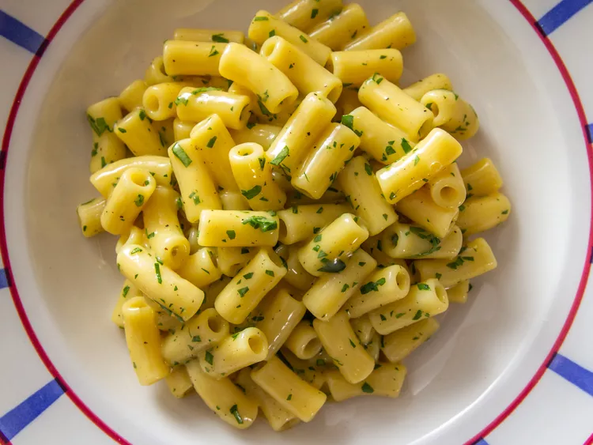

Egg Pasta

Description
My variation of egg pasta based on the street food called 'Egg Fried Noodles' that I usually order from office cafeteria
Ingredients
- Pasta (any type is fine) - 200 gms
- Egg - 4 nos
- Onion - 2 big, finely chopped
- Tomato - 2 medium, finely chopped
- Garlic - 5 cloves, finely chopped
- Spice Mix (Cinnamon, Clove, Cardamom) - As per your liking
- Salt - As required
- Vegetable Oil - As required
Steps
- Boil the pasta with adequate amount of water with salt. Cook as per instructions on the package
- Prepare the ingredients as per requirement
- Add oil to the pan and let it heat up for few minutes
- Add Spice Mix and toss for few seconds
- Add onion and let it fry till golden brown (i prefer carmelised onion taste, change as per your liking)
- Add Garlic and Tomato and saute till oil oozes out
- Add eggs into pan and let it fry as per your liking (I prefer well cooked eggs)
- 'Finally add boiled pasta and mix well. Once mixed, turn off the heat
- Enjoy